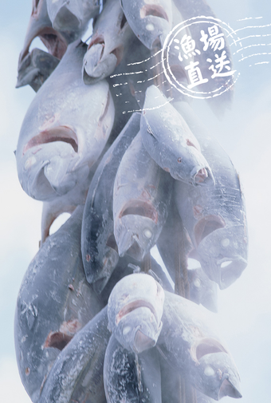
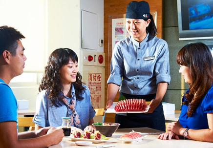

<>
順億鮪魚專賣店自2008 年創業開始，
以供應最好的超低溫鮪魚為理念，秉持『漁場直送』、『嚴選食材』的概念，
堅持提供顧客新鮮、對健康有益、有特色的餐點，
我們選擇零下60℃超低溫鮪魚為食材，
希望每位顧客都能享受『海洋到餐桌』的美味，
順億鮪魚專賣店堅持好品質，一貫性的作業流程，
從漁場捕撈、倉儲、加工均為零下60℃超低溫冷凍，
本公司之超低溫鮪魚絕不含CO (一氧化碳)、化學物質，
符合H A C C P之作業程序標準，遵循高品質的安全管理規範，
堅持手作、現場料理 ，天然、原味、真新鮮的理念，走向全世界！


連到第二頁
連到第三頁
連到第四頁
連到第五頁